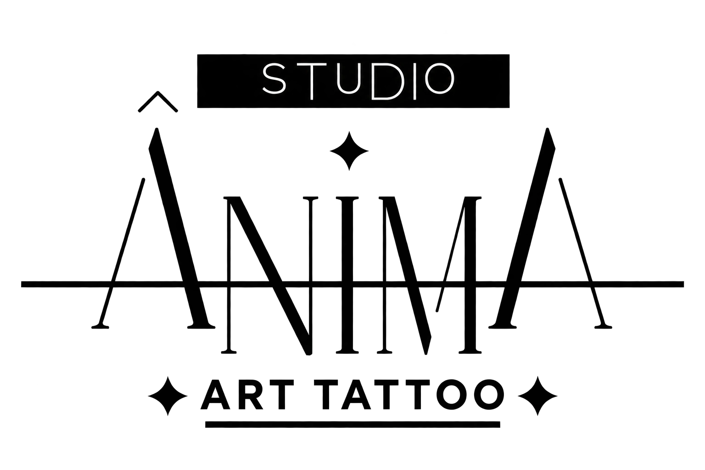
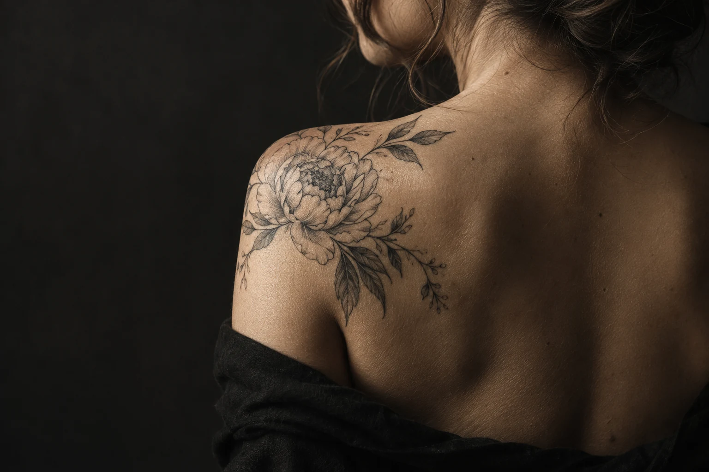
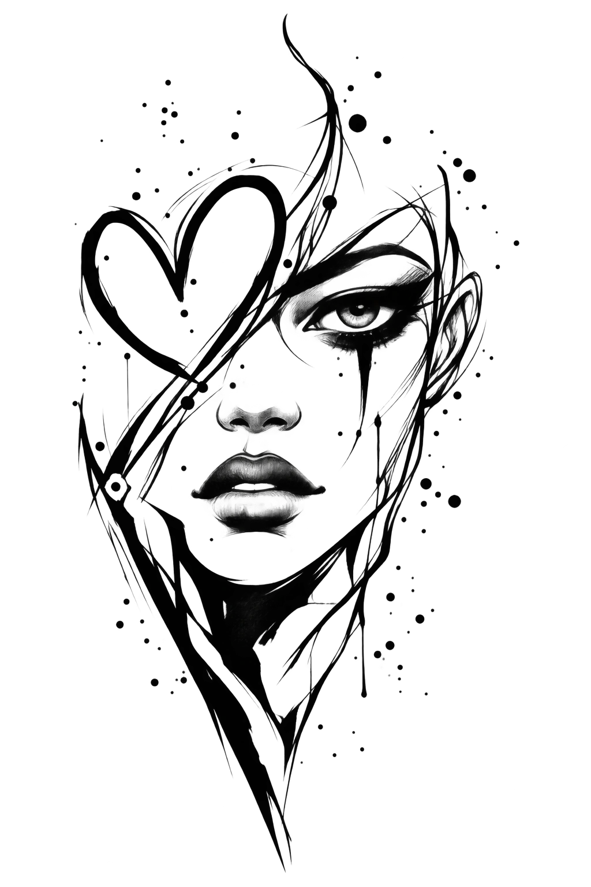

A ideia
Um símbolo, uma memória ou uma composição. Explique o que procura e indique referências que ajudem a visualizar.


ESTÚDIO DE TATUAGEM
BRAGANÇA, PORTUGAL
DA IDEIA À PELE.
Uma ideia sua. Um traço com intenção.
O próximo capítulo começa aqui.
01 / O ARQUIVO VISUAL
UMA LINGUAGEM. INFINITAS IDEIAS.
O primeiro passo pode ser um detalhe.
Explore uma linguagem, guarde uma referência
e conte-nos o que imagina.
Seleção conceptual · imagens geradas para esta proposta.
O portefólio real do estúdio será integrado na versão final.

ILUSTRAÇÃO RECUPERADA / UNIVERSO ÂNIMA
02 / O ESTÚDIO
ÂnimA — Art Tattoo, em Bragança. Um nome que aproxima arte e identidade. Aqui, a proposta é começar por aquilo que torna a sua ideia pessoal: o significado, o desenho e o lugar que vai ocupar.
Traga uma referência ou apenas um ponto de partida. O pedido ajuda a reunir os detalhes para conversar com o estúdio sobre o projeto.
Entrar no universo ÂnimA ↗03 / ANTES DO PRIMEIRO TRAÇO
MENOS IDAS E VOLTAS. MAIS CONTEXTO.Um símbolo, uma memória ou uma composição. Explique o que procura e indique referências que ajudem a visualizar.
A zona do corpo e o tamanho em centímetros dão contexto ao desenho, à composição e à avaliação do trabalho.
Envie o resumo para confirmar possibilidades, orçamento e disponibilidade. O pedido não reserva uma sessão.
04 / O SEU PRÓXIMO CAPÍTULO
Prepare o seu pedido em poucos passos.
A decisão final fica entre si e o estúdio.